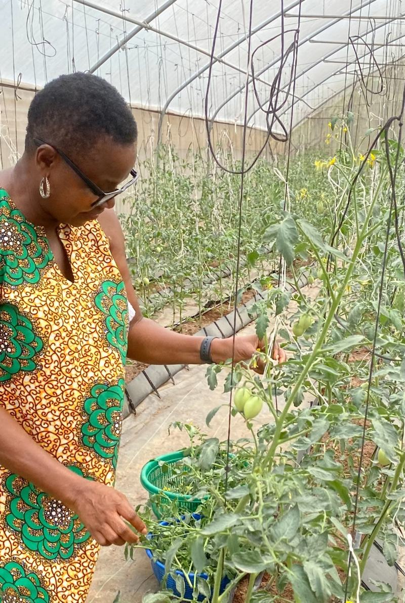
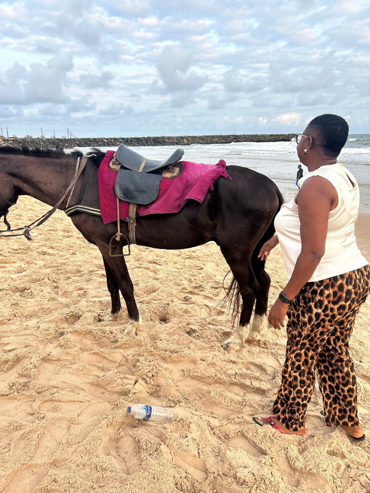

Are You Ready to Move Back to Africa? 10 Questions to Ask Yourself First
By Ada Eguzouwa. Updated November 2026.
Wanting to move back home is not the same as being ready. These 10 questions show you the difference. Answer each one honestly, on paper, and you'll know whether to book the ticket, wait a year, or change the plan.
When I left nursing to build farms in Nigeria, the hardest part wasn't the work. It was being honest with myself about what I didn't know yet. That's what these questions are for. There are no wrong answers, only answers you haven't faced yet.

From nursing to farming: checking tomato plants in the greenhouse.
1. Can I say why I'm moving in one sentence?
"I'm tired of it here" is a reason to leave, not a reason to go. Are you moving toward something at home: family, purpose, a business, a better pace of life? Your "why" is what keeps you there on the hard days.
2. How will I earn money after I land?
This is the question that sends most returnees back abroad. Do you have income that keeps coming after you move, such as a remote job, a business that already runs, rent or a pension? If your plan is "I'll figure it out when I get there," you're not ready yet.
3. Do I know what life there will really cost?
Not what it cost on your last holiday. What it costs today, in the area you want, with backup power, school fees and health insurance included. My guide How Much Does It Really Cost to Move Back to Africa? walks you through every cost.
4. Do I have a safety net?
Do you have at least 12 months of living costs saved, separate from building or business money? And a "ticket back" fund in case it doesn't work out? A safety net isn't a lack of faith. It's what lets you stay calm when things go wrong.
5. Is my family really on board?
Your spouse or partner, your children, and the relatives back home. Have you talked about where you'll live, how much you can support others, and who handles family requests? Many moves are strained by expectations that were never discussed.
6. Have I tested life there, not just visited?
A holiday is not a trial run. Have you spent at least three months there living normally, on a local budget, solving problems yourself? If not, plan that before anything else.

A holiday is not a trial run. Live there like a resident before you decide.
7. Do I have a plan for health care?
As a nurse, I always ask this one. Every Christmas I run Circle of Hope, a free health fair in my village in Nigeria, and it reminds me every year that good care isn't always close by. Do you know which hospital you'd use, what health insurance you'll have, and where you'd go in an emergency? If you or a family member has an ongoing condition, can you get the medication and care you need?
8. Do I know which documents I need?
A valid passport, the national ID you'll need, residency papers if it isn't your birth country, and an understanding of what happens to your status abroad if you're away for a long time. Keeping your options open abroad keeps you free.
9. Who on the ground can I trust, and how do I check?
Many diaspora losses come from people we trust, not strangers. Do you have someone independent, who isn't family, to check land, building and business matters for you? Do you know how to verify documents yourself?
10. What will I do if it doesn't work out?
Set a review date six or twelve months after you land. On that date, decide honestly: stay, adjust, or go back. Going back isn't failure. Having no plan for that day is what turns a setback into a crisis.
How did you do?
You answered 8–10 with confidence: you're close. Turn your answers into a written plan with dates.
You answered 5–7: the dream is real, but there are gaps. Work on income and money first.
You answered fewer than 5: don't book the ticket yet. Give yourself 12 months to prepare, and you'll move with far less stress.
Get your readiness score in two minutes.Take the free Move-Back Readiness Quiz to see which areas need work first. Then use my workbook, How to Move Back to Africa ($37), to turn every question above into a plan: the full 55-question checklist, the budget and income worksheets, and a 90-day landing plan.
Common questions
{FAQ}
This guide is general information, not legal, tax, immigration or financial advice.